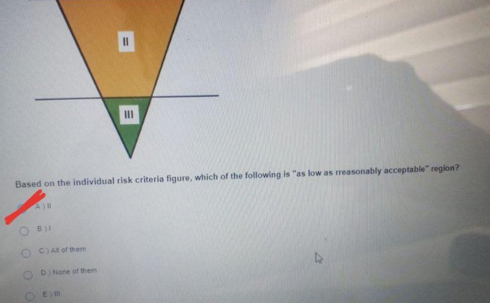
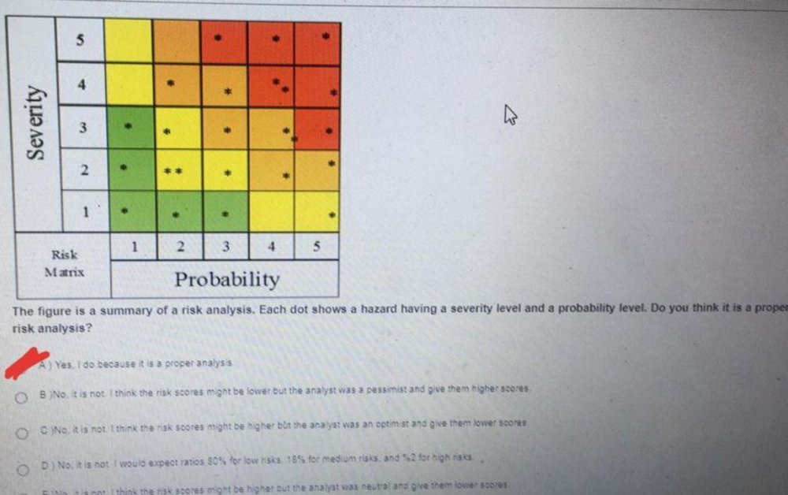
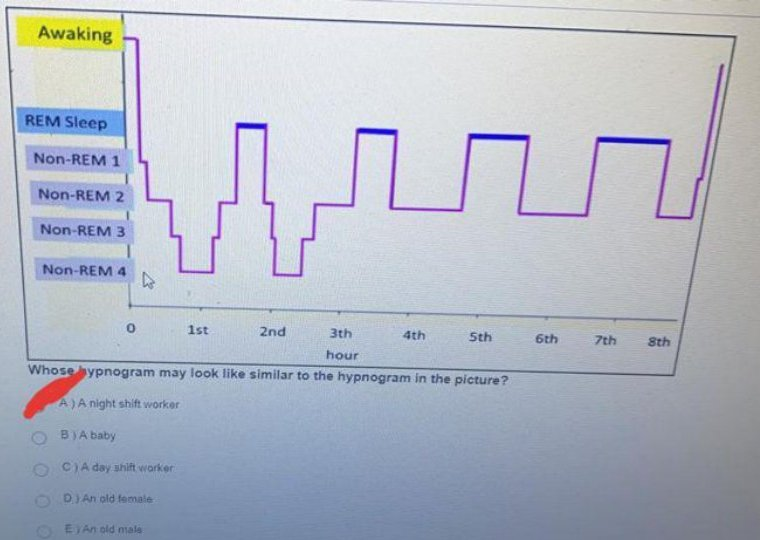
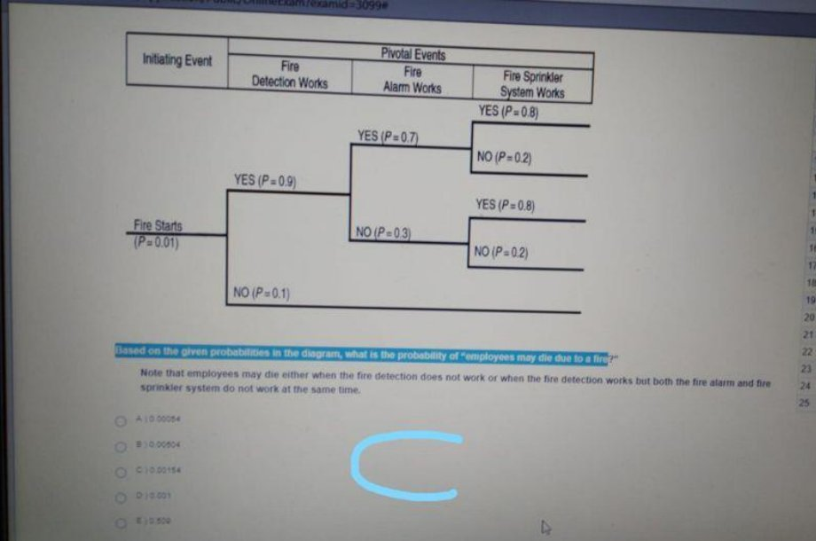
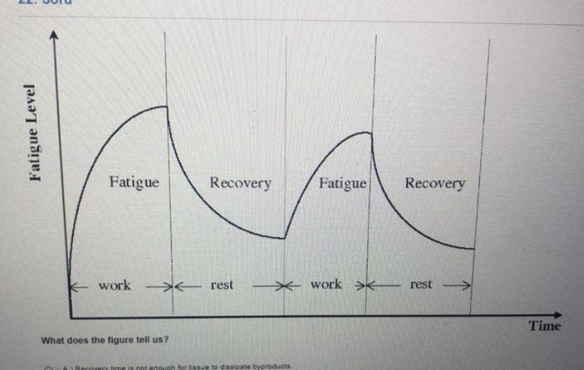
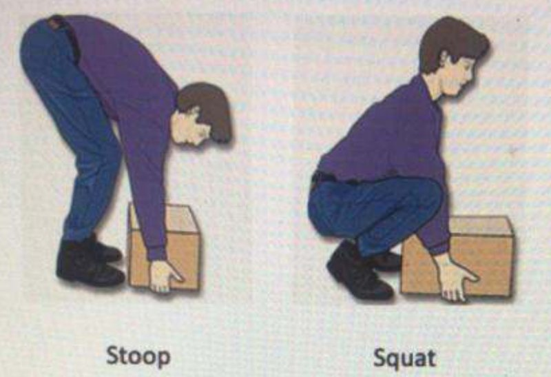

Kaynak: İSG2 SORULAR (2).pdf içinde kırmızı işaretli ekranlar; examid=2136 iki ekranda görünür, kalan kırmızı işaretli ekranlar aynı seri kabul edildi (examid görünmeyenler dahil).
Kırmızı işaret öğrencinin seçimi/ipucu olarak "marked" alındı; yanlış olduğu düşünülenler "disputed" ile düzeltildi.
Aynı sorular examid=3099 dosyasında da farklı şık sırasıyla yer alıyor.
Bu sınav iki kaynaktan birleştirildi: İSG2 SORULAR (2).pdf içindeki kırmızı işaretli ekranlar ve isg vizew.pdf'in son sayfaları (antropometri soruları). Elektrik tehlikesi sorusu iki kaynakta da vardı, bir kez alındı.
Bir şıkkı işaretlediğinizde doğru cevap görünür. Seçiminiz bu tarayıcıda saklanır.
0 / 37 cevaplandı
1. Why do we need to perform a risk assesment?
Doğru cevap: A · Kâğıtta/ekranda işaretli cevap · 14. soru; kırmızı işaret A şıkkında. 'assesment' yazımı ekrandaki gibi.
2. What is the difference between accident and mishap?
Doğru cevap: B · İşaretli cevapla çelişiyor, gözden geçirin · kâğıtta C işaretli · 2. soru. Kırmızı işaret C şıkkında. Kaza yaralanma/hasarla sonuçlanır, ramak kala (mishap) sonuçlanmaz; doğru cevap B.
3. Which of the following is the most common health problems among office workers?
Doğru cevap: E · Kâğıtta/ekranda işaretli cevap · 4. soru, 4 puan. Kırmızı işaret E şıkkında.
4. Based on the individual risk criteria figure, which of the following is "as low as rreasonably acceptable" region?

Doğru cevap: A · Kâğıtta/ekranda işaretli cevap · Kırmızı işaret A şıkkında. Şekil: ters üçgen risk kriteri (I katlanılamaz, II ALARP/makul olduğu kadar düşük, III geniş ölçüde kabul edilebilir); ekranda yalnız II ve III bölgesi görünüyor. 'rreasonably' yazımı ekrandaki gibi.
5. If you know the probabilities of causes of an event, which of the following hazard analysis technique can you [okunamadı]
Doğru cevap: B · İşaretli cevapla çelişiyor, gözden geçirin · kâğıtta E işaretli · emin değiliz · 11. soru. Soru metni sağ kenarda kesik. Kırmızı işaret E şıkkında. Nedenlerin olasılıkları biliniyorsa tepe olayın olasılığı hata ağacı (FTA) ile hesaplanır; ETA başlatıcı olaydan ileri doğru ilerler.
6. Which hazard analysis technique uses probability, frequency, and severity as input in the assessment?
Doğru cevap: D · Kâğıtta/ekranda işaretli cevap · 9. soru. Kırmızı işaret D şıkkında.
7. Which of the following is the first priority in hazard control?
Doğru cevap: A · Kâğıtta/ekranda işaretli cevap · 20. soru. Kırmızı işaret A şıkkında.
8. Which of the following is not one of the shift schedule dynamics?
Doğru cevap: B · Kâğıtta/ekranda işaretli cevap · 22. soru ('not' altı çizili). Kırmızı işaret B şıkkında.
9. Which of the following is an example of ionizing radiation?
Doğru cevap: E · Öğrenci cevap listesine göre · emin değiliz · 25. soru. Ekranda soru 'ionizing' olarak görünüyor; kırmızı işaret E (Laser) üzerinde ve kırmızı el yazısı 'non ionizin' var. Laser iyonlaştırıcı olmayan radyasyondur; soru metni büyük olasılıkla 'non-ionizing' olacaktı (ekranda 'non-' görünmüyor). Metin ekrandaki gibi bırakıldı.
10. The figure is a summary of a risk analysis. Each dot shows a hazard having a severity level and a probability level. Do you think it is a proper risk analysis?

Doğru cevap: D · İşaretli cevapla çelişiyor, gözden geçirin · kâğıtta A işaretli · Şekil: Severity (1-5) x Probability (1-5) risk matrisi, noktalar tehlikeleri gösteriyor. Kırmızı işaret A şıkkında. Dağılımda çok sayıda orta/yüksek risk noktası var; uygun bir analizde düşük riskler çoğunlukta beklenir (D). Başka kopyada mavi el yazısı 'A' ve ok, 'I would expect ratios 80% for low risks...' şıkkını gösteriyor (bu sıralamada D).
11. If you use a plastic shield to eliminate radiation exposure, which type of radiation can be stopped?
Doğru cevap: C · Kâğıtta/ekranda işaretli cevap · 17. soru, 4 puan. Kırmızı işaret C şıkkında. Plastik kalkan alfa (ve beta) durdurur.
12. Which of the following is not a good suggestion for ladders?
Doğru cevap: B · İşaretli cevapla çelişiyor, gözden geçirin · kâğıtta A işaretli · 2. soru ('not' altı çizili). Kırmızı işaret A şıkkında (C şıkkında seçim imleci). Ahşap merdiven boyanmamalıdır (çatlakları gizler); doğru cevap B.
13. Whose hypnogram may look like similar to the hypnogram in the picture?

Doğru cevap: C · Kâğıtta/ekranda işaretli cevap · Şekil: 8 saatlik uyku hipnogramı, düzenli NREM/REM döngüleri. Kırmızı el yazısı 'Day' ve C şıkkının çevresinde kırmızı oval (bir kopyada A yanında küçük bir kırmızı çizgi de var); başka bir kopyada (examid=3099, 3. soru) mavi 'B' = 'A day shift worker'.
14. What is the deliberate attempt to force a person out of their workplace by humiliation, general haras[okunamadı]
Doğru cevap: E · Kâğıtta/ekranda işaretli cevap · 5. soru. Metin sağ kenarda kesik. Kırmızı işaret E şıkkında.
15. Based on the given probabilities in the diagram, what is the probability of "employees may die due to a fire?" Note that employees may die either when the fire detection does not work or when the fire detection works but both the fire alarm and fire sprinkler system do not work at the same time.

Doğru cevap: B · İşaretli cevapla çelişiyor, gözden geçirin · kâğıtta A işaretli · Olay ağacı: Fire Starts P=0.01; detektör çalışır 0.9 / çalışmaz 0.1; alarm çalışır 0.7 / çalışmaz 0.3; sprinkler çalışır 0.8 / çalışmaz 0.2. P = 0.01 x [0.1 + 0.9 x 0.3 x 0.2] = 0.00154. Bu kopyada kırmızı işaret A (0.00054) üzerinde; diğer kopyada mavi harf, 0.00154 şıkkını gösteriyor. Şıklar kopyalar arasında karışık sırada.
16. Which of the following is a false statement?
Doğru cevap: B · İşaretli cevapla çelişiyor, gözden geçirin · kâğıtta E işaretli · 1. soru. Bu kopyada kırmızı işaret E şıkkında. Mammoth Cave deneyi vücudun 24 saat dışı döngüye uyum sağlayamadığını göstermiştir; yanlış ifade B. Başka kopyalarda (examid=3099, 5. soru) E (Mammoth) işaretli, mavi 'E'; 2. soru kopyasında B seçili.
17. Which of the following is not a criterion to identify a confined space?
Doğru cevap: C · Kâğıtta/ekranda işaretli cevap · 21. soru ('not' altı çizili). Kırmızı işaret C şıkkında (iki kopya).
18. Which of the following is an example of a control of electrical hazards?
Doğru cevap: D · Kâğıtta/ekranda işaretli cevap · 10. soru. Kırmızı işaret D şıkkında. Başka kopyada (examid=3099, 13. soru) mavi 'E' = 'All of them'.
19. What is the deliberate isolation of energy sources to prevent accidental energy release during maintenance or repair?
Doğru cevap: C · Kâğıtta/ekranda işaretli cevap · 8. soru. Kırmızı işaret C şıkkında.
20. Which of the following is a good sleep habit?
Doğru cevap: B · Kâğıtta/ekranda işaretli cevap · 15. soru. Kırmızı işaret B şıkkında.
21. Stairways must be installed at no more than ...... from the horizontal.
Doğru cevap: D · Kâğıtta/ekranda işaretli cevap · 4. soru. Kırmızı işaret D şıkkında (iki kopya). Merdivenler yataydan en fazla 50° eğimle kurulabilir (OSHA 30°-50°).
22. We discussed the results of research analyzing oxygen deficiency fatalities for the 10 years. Which of the following is not a result of the research?
Doğru cevap: C · Öğrenci cevap listesine göre · 3. soru, 4 puan. Kırmızı işaret C şıkkında; sağdaki 'Cevap Listesi'nde 3. soru için C yazıyor. Başka kopyada (10. soru) mavi 'C' ve aynı şık.
23. Which of the following is a false statement?
Doğru cevap: A · Kâğıtta/ekranda işaretli cevap · 12. soru; ekranda examid=2136 görünüyor (alt kısımda adres çubuğu). A radyosu seçili; D şıkkının üzerinde kırmızı çizgi var.
24. Suppose we want to build a staircase between two floors. The vertical height between the two floors is 2.4 meters. Based on the OSHA standard, what is the minimum number of steps that we should have?
Doğru cevap: A · Kâğıtta/ekranda işaretli cevap · 24. soru, 4 puan. Kırmızı işaret A şıkkında. OSHA'ya göre basamak yüksekliği en çok 24 cm olduğundan 240/24 = 10 basamak. Şıklar küçük puntoda okundu.
25. Which hazard analysis technique is one of the probabilistic risk assessment techniques?
Doğru cevap: E · Kâğıtta/ekranda işaretli cevap · 3. soru. Kırmızı işaret E şıkkında.
26. Which of the following is not a good practice to minimize radiation dose?
Doğru cevap: C · Kâğıtta/ekranda işaretli cevap · 1. soru ('not' altı çizili). C radyosu seçili, kırmızı çizgi C üzerinde. E şıkkındaki 'andlead' yazımı ekrandaki gibi.
27. "Identifying hazards which are existing in or may arise from outside the workplace, analyzing and rating the factors causing these hazards to turn into risks and the risks caused by hazards and determining control measures" is called as .....?
Doğru cevap: A · Kâğıtta/ekranda işaretli cevap · 4. soru, 4 puan. Kırmızı işaret A şıkkında.
28. What are the advantages of xooming your computer screen and enlarging the font?
Doğru cevap: C · Kâğıtta/ekranda işaretli cevap · 3. soru. Kırmızı işaret C şıkkında; D şıkkı metin olarak vurgulanmış. 'xooming' ve 'Enable' yazımları ekrandaki gibi.
29. Which of the following hazard analysis technique is a forward, bottom up, logical modeling technique for both success and failure that explores responses through a single initiating event and lays a path for assessing probabilities of the outcomes and overall system analysis?
Doğru cevap: B · Kâğıtta/ekranda işaretli cevap · 1. soru, 4 puan. Kırmızı işaret B şıkkında.
30. Which of the following causes the circadian rhythm to desynchronize?
Doğru cevap: D · Kâğıtta/ekranda işaretli cevap · 21. soru. Kırmızı işaret D şıkkında. Başka kopyada (20. soru, 4 puan) mavi 'B' = 'All of them' (şık sırası farklı).
31. Is this a good work posture?
Doğru cevap: C · İşaretli cevapla çelişiyor, gözden geçirin · kâğıtta E işaretli · emin değiliz · Ekranda examid=2136 görünüyor (iki fotoğraf). Soru bir fotoğrafa dayanıyor (tabureye oturan, sırtı desteksiz bir kişi); fotoğrafta kişi tanınabildiği için görsel kırpılmadı. Kırmızı işaret E şıkkında. A ve E aynı şeyi söylediğinden ikisi de doğru olamaz; sırt (bel) desteği eksikliği (C) en tutarlı cevap. Güven düşük.
32. The frequency of falling on the lower level is higher, but the severity of fall accidents on the lower level is lower compared to the same level falls.
Doğru cevap: B · İşaretli cevapla çelişiyor, gözden geçirin · kâğıtta E işaretli · 11. soru, 4 puan. Kırmızı işaret E şıkkında. Aynı seviyede düşmeler daha sık, yüksekten düşmeler daha ağırdır; ifade ters kurulduğundan doğru cevap B. Soru kökünde ekranda 'falls.' sözcüğü kısmen kesik.
33. What does the figure tell us?

Doğru cevap: B · İşaretli cevapla çelişiyor, gözden geçirin · kâğıtta D işaretli · emin değiliz · 22. soru, 4 puan. Şekil: iş (work) / dinlenme (rest) döngülerinde yorgunluk düzeyi (Fatigue Level) - zaman grafiği; her dinlenme sonrası yorgunluk taban düzeye inmeden yeni iş döngüsü başlıyor. Kırmızı işaret D şıkkında; şekil bu ifadeyi desteklemiyor, yorgunluk düzeyinin yeterince düşmediğini (B) gösteriyor. Güven düşük.
34. Where/how do we use anthropometric data?
Doğru cevap: A · Kâğıtta/ekranda işaretli cevap · El yazısı: 'Cevap doğru' (öğrenci sonuçta doğru olduğunu görmüş); E (All of them) da makul, bu yüzden güven orta.
35. Which of the following is an example for static anthropometrics?
Cevap belirlenemedi. · İşaretli cevapla çelişiyor, gözden geçirin · kâğıtta C işaretli · emin değiliz · El yazısı: 'Soru notlu olursa E'. A-D statik (yapısal) ölçülerdir, E erişim mesafesi fonksiyonel/dinamiktir; soru hatalı/iptal olabilir. Net cevap belirlenemedi.
36. Which of the following is an example for dynamic anthropometrics?
Doğru cevap: D · Öğrenci cevap listesine göre · El yazısı '8)D'.
37. [Şekil: Stoop ve Squat kaldırma] Which of the following is a true statement?

Doğru cevap: B · Öğrenci cevap listesine göre · emin değiliz · El yazısı '5)B'. Not: A seçeneği de literatürde doğru kabul edilir; anahtara uyuldu.